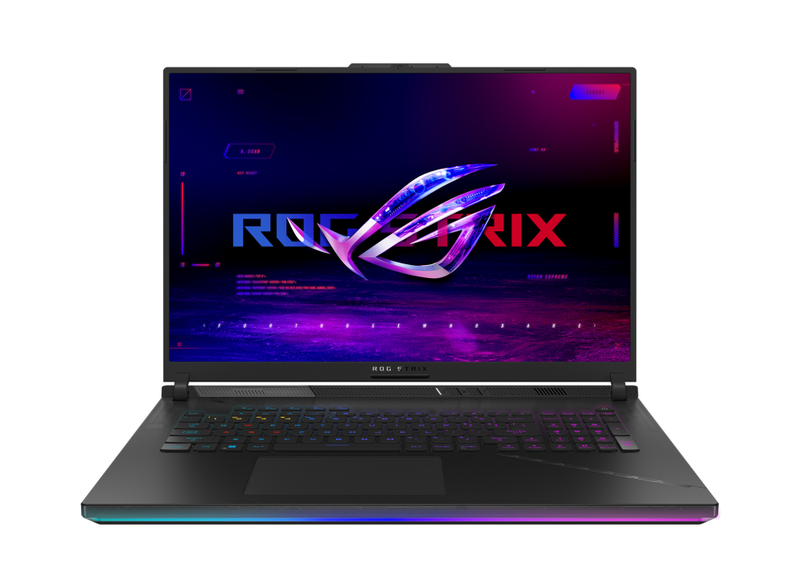

|  |
| ROG Flow X16 | ROG Strix Scar 18 |
| 售價：NT$59900元 | 售價：NT$64900元 |
| 作業系統：Windows 11 Home | 作業系統：Windows 11 Pro |
| 處理器：13th Gen Intel® Core™ i9-13900H Processor 2.6 GHz (24M Cache, up to 5.4 GHz, 14 cores: 6 P-cores and 8 E-cores) | 處理器：13th Gen Intel® Core™ i9-13980HX Processor 2.2 GHz (36M Cache, up to 5.5 GHz, 24 cores: 8 P-cores and 16 E-cores) |
| 記憶體：16GB DDR5-4800 SO-DIMM x 2 最大容量 64GB Support dual channel memory | 記憶體：NVIDIA® GeForce RTX™ 4090 Laptop GPU ROG Boost: 2090MHz* at 175W (2040MHz Boost Clock+50MHz OC, 150W+25W Dynamic Boost) 16GB GDDR6 |
| 儲存空間：1TB PCIe® 4.0 NVMe™ M.2 SSD | 儲存空間：32GB DDR5-4800 SO-DIMM x 2 Max Capacity : 64GB Support dual channel memory |
| 尺寸：35.5 x 24.3 x 1.94 ~ 2.19 cm (13.98" x 9.57" x 0.76" ~ 0.86") | 尺寸：39.9 x 29.4 x 2.31 ~ 3.08 cm (15.71" x 11.57" x 0.91" ~ 1.21") |